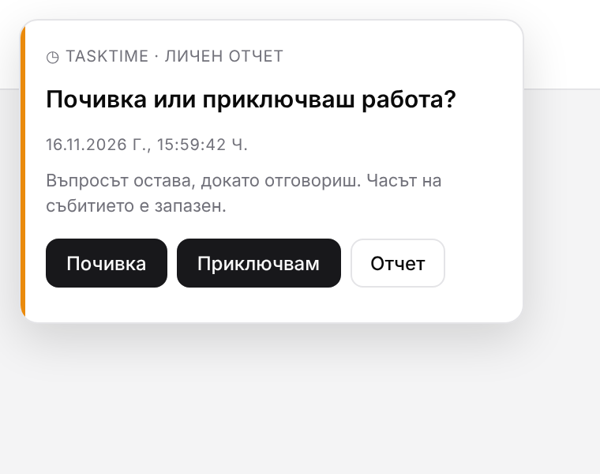
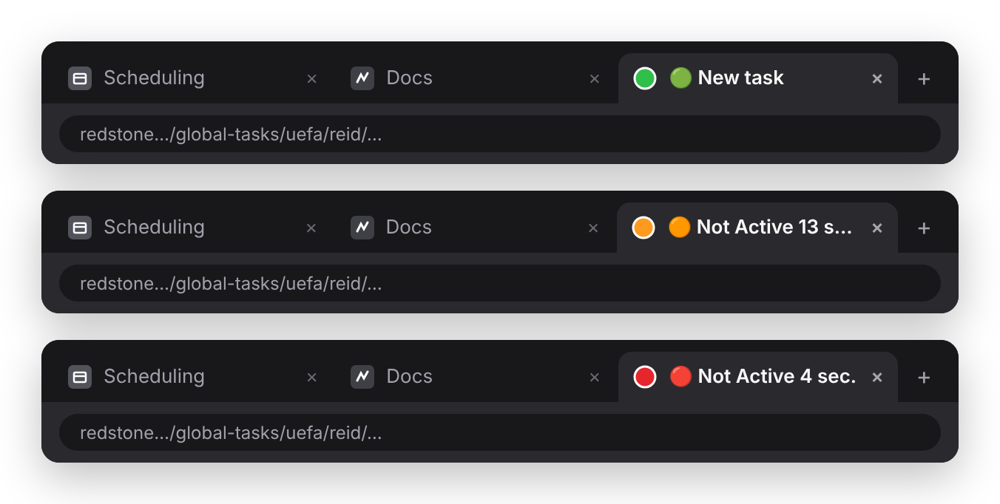
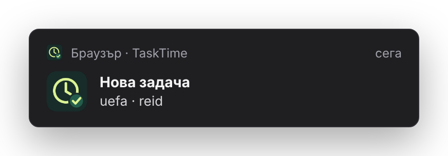
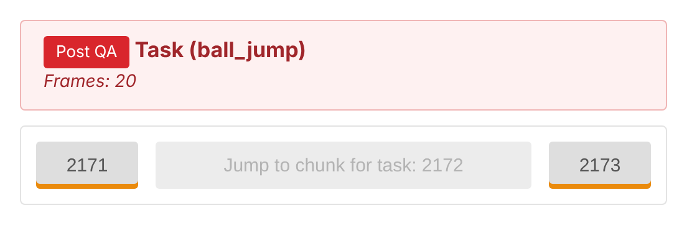
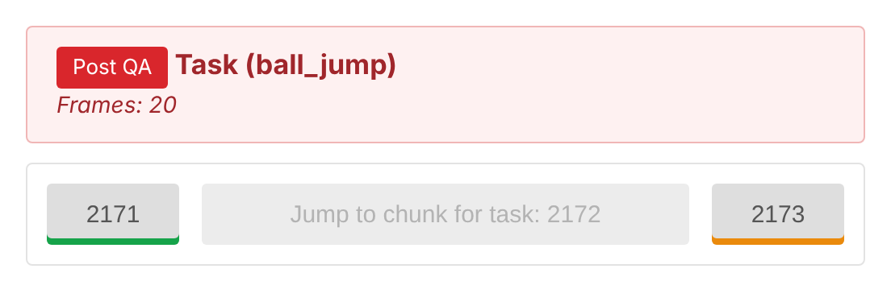
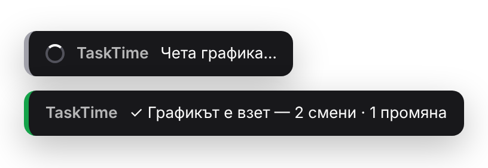
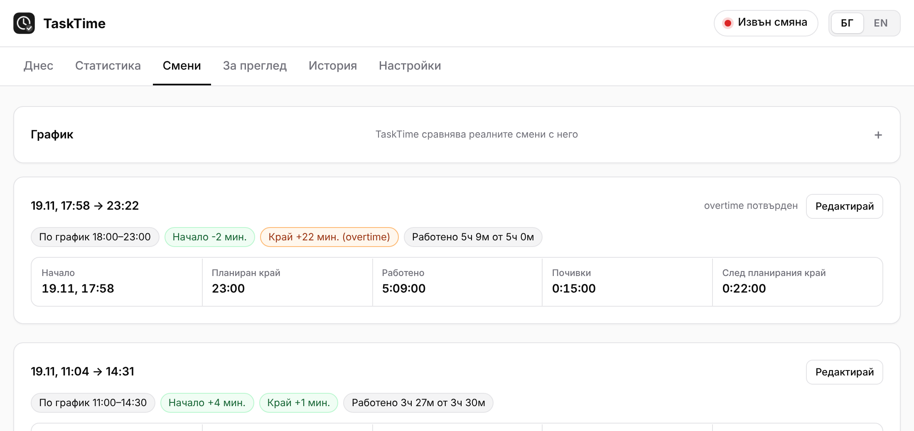
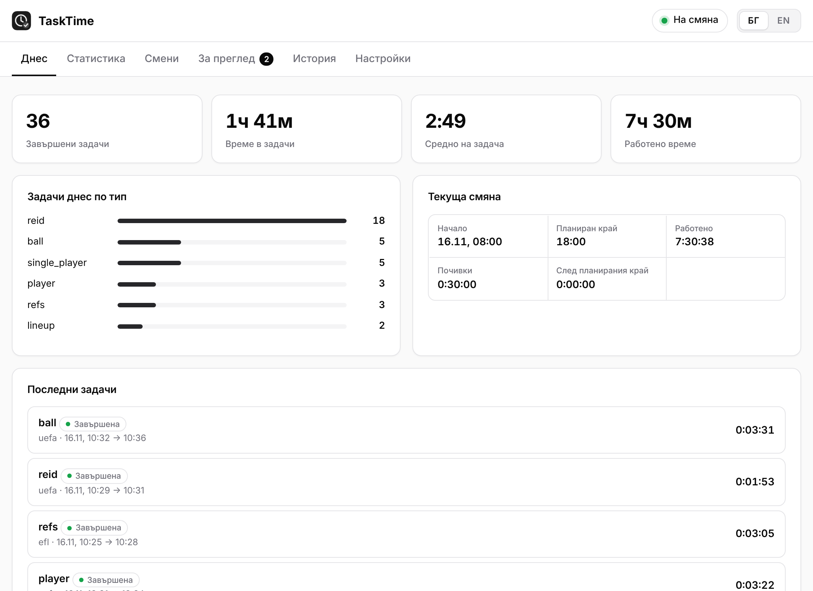
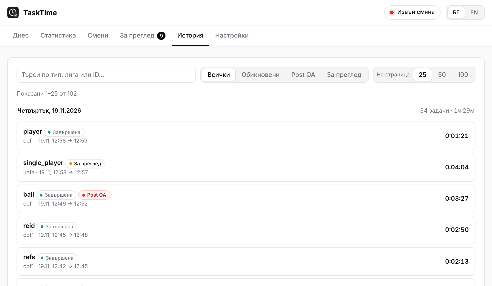
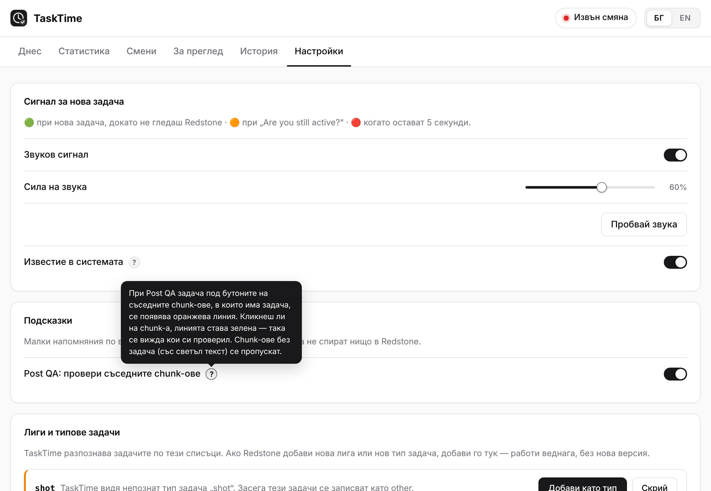

TaskTime
TaskTime
Ръководство за TaskTime
Всичко стъпка по стъпка: от инсталирането до ежедневната работа, обновяването и решаването на проблеми. Версия 0.1.26.
01Какво ти трябва
- Google Chrome или Opera на компютър (Windows, macOS или Linux).
- Достъп до Redstone (
redstone.secondspectrum.com) и Ximble (app.ximble.com). - Двата сайта трябва да се отварят в същия браузър и профил, в който е инсталиран TaskTime.
- Около 2 минути за инсталиране.
02Инсталиране
TaskTime не е в магазина за добавки, затова се зарежда ръчно от папка. Прави се веднъж.
Documents\TaskTime.- Свали файла за своя браузър от сайта: „Свали“ до Google Chrome или до Opera.
- Създай папка, например
Documents\TaskTime. - Разархивирай сваления ZIP в тази папка: десен бутон → Extract All (Извлечи всички) → избери папката. Вътре трябва да има файл
manifest.json. - Отвори страницата с разширения: напиши в адресната лента
chrome://extensions(Chrome) илиopera://extensions(Opera) и натисни Enter. - Включи „Developer mode“ (Режим за програмисти) — ключ горе вдясно в Chrome, горе в Opera.
- Натисни „Load unpacked“ (Зареждане на разопаковано) и избери папката от стъпка 2 — тази, в която е
manifest.json, не самия ZIP. - Закачи иконката: натисни иконката-пъзел в лентата на браузъра → карфицата до TaskTime. Иконката (часовник с отметка) остава винаги видима.
- Презареди отворените табове с Redstone и Ximble (F5). Готово.
03Първоначална настройка
Отнема минута и се прави веднъж. Отчетът се отваря с клик върху иконката на TaskTime.
- Избери език: горе вдясно в отчета — БГ | EN. Езикът важи за отчета, въпросите и известията.
- Пробвай звука: отчет → Настройки → „Пробвай звука“. Ако не чуваш нищо, виж раздел 14.
- Включи известието в системата (по желание): Настройки → „Известие в системата“ → разреши в браузъра.
- Запиши папката: Настройки → „Версия“ → „Отвори разширенията“ → на страницата на TaskTime копирай пътя до „Loaded from“ → постави го в „Папка на добавката“ → „Запази“.
- Вземи графика: отвори Ximble → My Schedule → изглед Week. Долу вдясно ще видиш „✓ Графикът е взет“. Повече в раздел 8.
- Дръж Ximble отворен в отделен таб през цялата смяна.
04Работа през смяната
- Clock In в Ximble. TaskTime вижда, че си на смяна; иконката става 🟢. Ако има график за деня, взима края от него; ако няма — пита „До колко часа е смяната ти?“.
- Работиш в Redstone както винаги. Задачите се записват сами (раздел 5).
- Почивка: Clock Out в Ximble → въпрос „Почивка или приключваш работа?“ → „Почивка“. Иконата става 🟠. При Clock In смяната продължава.
- Втора смяна в същия ден: Clock In след края на първата смяна започва нова смяна — не се брои за overtime.
- Край: Clock Out → „Приключвам“. Иконата става 🔴.
- Ако планираният край мине, а още си на смяна: „Още ли работиш?“ → „Продължавам с overtime“ или „Приключвам“ (тогава TaskTime напомня да направиш Clock Out).

| Иконка на TaskTime | Значение |
|---|---|
| 🟢 | на смяна |
| 🟠 | почивка |
| 🔴 | извън смяна |
| число | чакащи въпроси |
| ! | има задачи „За преглед“ |
| ↑ | има нова версия |
05Как се записват задачите
- Отваряш задача в Redstone — TaskTime я разпознава по адреса (всяка лига: uefa, efl, cbf1, wnba, ncaa…; всеки тип: ball, player, single_player, reid…).
- Работиш — кликове, Auto Advance, презареждане (F5) са част от същата задача.
- Натискаш бутон за край: Finish & Next, Finish & Exit, Clear Samples & Next, Clear Samples & Exit или Incorrect Player.
- Продължаваш към следваща задача, към екрана за чакане или затваряш таба — задачата е завършена.
| Статус | Кога | Влиза ли в статистиката |
|---|---|---|
| Завършена | натиснат бутон за край и напускане до 2 минути след това | да |
| За преглед | без бутон за край, прекъсване над половин минута, грешка от Redstone, същата задача в два таба | само ако я потвърдиш |
| Премахната от модератор | Redstone показва „Task no longer available“ | не |
| Изключена | ти си я изключил от „За преглед“ | не |
Етикети в историята: Post QA (раздел 7) и Incorrect Player.
06Сигнали и известия
Табът с Redstone получава цветна точка и надпис, а TaskTime пуска кратък сигнал.

| Кога | На таба | Звук | Спира | |
|---|---|---|---|---|
| 🟢 | нова задача, а не гледаш таба с Redstone | „New task“ | 1 сигнал | като се върнеш в таба |
| 🟠 | Redstone пита „Are you still active?“ | „Not Active 13 sec.“ | 1 / сек. | когато прозорецът изчезне |
| 🔴 | остават 5 секунди | „Not Active 4 sec.“ | 2 / сек. | когато прозорецът изчезне |
Известие в системата

- Отчет → Настройки → „Известие в системата“ → включи.
- Браузърът пита за разрешение → Allow / Разреши.
- Ако пак не излиза: провери дали Windows не е в режим „Не безпокой“ (Focus Assist).
07Post QA
Post QA задачите се отбелязват с червен етикет в отчета и имат отделен ред в статистиката.
Подсказка за съседните chunk-ове
- Отвориш Post QA задача — под съседните chunk-ове, в които има задача (тъмносив бутон), се появява оранжева линия.
- Кликнеш на chunk-а — линията става зелена.
- Chunk-ове без задача (светлосиви) и средният бутон нямат линия.


Само напомня — нищо не спира. Изключва се от Настройки → Подсказки.
08График от Ximble
- Отвори Ximble → My Schedule.
- Избери изглед Week — той показва всички смени. В изглед Month Ximble крие част от смените зад „1 more…“.
- Изчакай 2–3 секунди. Долу вдясно излиза „TaskTime · Чета графика…“, после „✓ Графикът е взет — N смени“.
- За следващата седмица — превключи седмицата в Ximble; TaskTime я прочита сам.

- Взимат се само потвърдените смени (кафяви, с отметка). Сивите (непотвърдени) и „Time off“ се пропускат.
- Поддържат се няколко смени на ден и нощни смени (до следващия ден).
- TaskTime само чете страницата — нищо не натиска.
Ръчни промени
- Отчет → Смени → разгъни „График“.
- До деня натисни „Промени“ (друг час), „Почивен“ или „Махни промяната“.
- Натисни „Запази графика“. Ръчните промени имат предимство пред Ximble.
Сравнение

Ако има планирана смяна без Clock In, най-горе в „Смени“ излиза „Планирани смени без Clock In“.
09Отчетът
Клик върху иконката на TaskTime. Горе: статус (на смяна / почивка / извън смяна) и БГ | EN.
| Таб | Какво има |
|---|---|
| Днес | завършени задачи, време в задачи, средно на задача, работено време; задачи по тип; текуща смяна; последни задачи |
| Статистика | „Днес / 7 дни / Този месец“ или период; по тип: брой, най-бърза, най-бавна, средно, общо; ред „Общо“; Свали CSV |
| Смени | график (раздел 8), всяка смяна със сравнение, бутон „Редактирай“ |
| За преглед | неясните задачи с причина; Потвърди или Изключи |
| История | по дни; 25/50/100 на страница; филтри Всички · Обикновени · Post QA · За преглед; търсене по тип, лига, ID |
| Настройки | раздел 11 |


10Поправка на смени
- Отчет → Смени → „Редактирай“ на смяната.
- Промени начало, край (празно = продължава, само за текущата), планиран край.
- Почивки: промени часа, × за изтриване, „+ Почивка“ за нова.
- По желание — ключ „Overtime е потвърден“.
- Запази. Работеното време се преизчислява. Смяната получава етикет „ръчно редактирана“.
- Грешно създадена смяна → „Изтрий смяната“ (задачите остават).
11Настройки

| Раздел | Какво правиш |
|---|---|
| Сигнал за нова задача | звук вкл./изкл., сила, „Пробвай звука“, известие в системата (виж „?“) |
| Подсказки | вкл./изкл. линиите при Post QA |
| Лиги и типове задачи | добавяш нова лига, тип или страница, която не е задача. Ако TaskTime види непознат тип, предлага „Добави като тип“. |
| Версия | инсталирана версия, „Провери сега“, стъпки за обновяване, „Отвори разширенията“ |
| Папка на добавката | записваш пътя, за да го имаш под ръка |
| Твоите данни | „Свали архив (JSON)“ и „Възстанови от архив“ |
12Обновяване
Когато има нова версия, на иконката се появява ↑, а в отчета — лента с бутон към сайта.
- Отчет → Настройки → „Провери сега“ (по желание — проверката става и сама няколко пъти на ден).
- Свали новия ZIP от сайта.
- Разархивирай го върху същата папка → при въпроса избери Replace (замени файловете).
- Отвори
chrome://extensions/opera://extensions(или Настройки → „Отвори разширенията“). - На картата на TaskTime натисни ↻ Reload — в Chrome е долу вдясно, в Opera до името.
- Презареди табовете с Redstone и Ximble (F5).
- Провери: Настройки → Версия показва новата версия, а ↑ го няма. Записите остават.
13Архив и преместване
Архив
- Отчет → Настройки → „Твоите данни“ → „Свали архив (JSON)“.
- Пази файла на сигурно място. Препоръчително е от време на време.
Преместване на друго място или компютър
- Свали архив (горе).
- Инсталирай TaskTime на новото място (раздел 2).
- Отчет → Настройки → „Възстанови от архив“ → избери файла → потвърди.
- Ако си сменил папката — премахни старата добавка от страницата с разширения едва след това.
14Решаване на проблеми
Задачите не се записват
1) Презареди таба с Redstone (F5) — особено след обновяване или Reload. 2) Провери, че Redstone е в същия браузър и профил. 3) Ако Redstone е добавил нов тип задача — Настройки → „Лиги и типове задачи“.
Не чувам звук
Настройки → „Пробвай звука“. Провери ключа „Звуков сигнал“, силата и дали браузърът/табът не е заглушен. Зеленият сигнал звучи само ако не гледаш таба с Redstone.
Не излиза известие на екрана
Включи го в Настройки и разреши в браузъра. Провери „Не безпокой“ / Focus Assist в Windows и известията за браузъра в системните настройки.
Графикът от Ximble не се взима
Презареди Ximble (F5), отвори My Schedule → Week и изчакай 3 секунди. Ако не се появи съобщението долу вдясно — провери версията в Настройки.
Втората смяна липсва в графика
В изглед Month Ximble я крие зад „more…“. Отвори изглед Week.
Задача отиде „За преглед“, а я направих нормално
Отчет → „За преглед“ → Потвърди. Причината е изписана до задачата.
Иконката показва ↑, а вече обнових
Натисни ↻ Reload на TaskTime в страницата с разширения.
Сгреших планирания край или почивка
Отчет → Смени → „Редактирай“ (раздел 10).
Цветната точка на таба остана
Кликни в страницата на Redstone. Ако остане — F5.
Сайтът показва стара информация
Презареди с Ctrl+F5.
15Поверителност
- Всички записи са само в твоя браузър. Няма сървър, акаунт или анализ.
- TaskTime само наблюдава — не натиска бутони и не променя нищо в Redstone или Ximble. Сменя само иконката и надписа на таба при сигнал и показва линиите при Post QA.
- Единствената връзка навън е проверката за нова версия на този сайт.
TaskTime е личен отчет. Не замества официалното отчитане. Не е свързан с Google, Opera, Second Spectrum или Ximble.